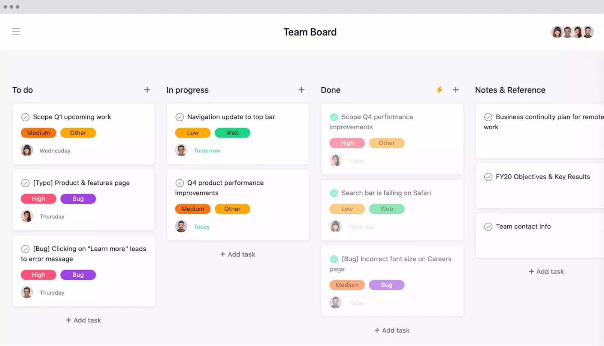
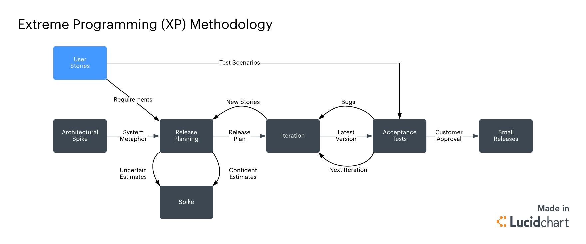
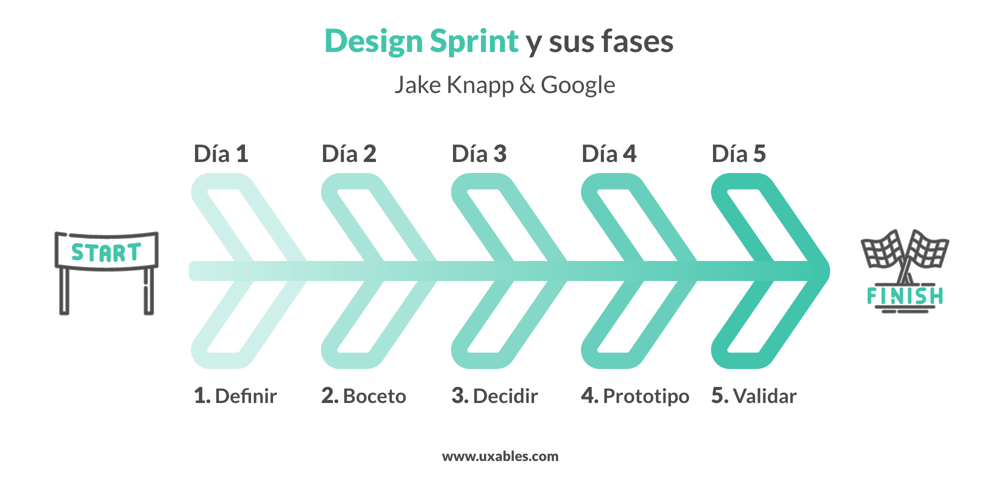

Keila Cruz
Last update Sept 29,2023
Kanban ofrece un enfoque visual para la aplicación de las prácticas ágiles. Los equipos usan herramientas en línea con tableros Kanban para representar ciertas tareas dentro del proceso de desarrollo. Las tareas se ven representadas en forma de tarjetas dentro de un tablero y las etapas, en columnas. A medida que los distintos miembros del equipo trabajan con esas tareas, las “tarjetas” pasan de la columna de trabajo pendiente a la que representa a la nueva etapa en la que se encuentra la tarea. El método es muy bueno para que los equipos puedan identificar obstáculos y visualizar cuánto trabajo se está llevando a cabo.
Recommendation: Tablero Kanban
La metodología Scrum es muy común para la aplicación de prácticas ágiles en equipos pequeños. Hay un Scrum Master que es quien lidera el equipo, cuya función principal es la de despejar todos los obstáculos para que los demás puedan ocuparse de sus trabajos cotidianos. El trabajo se efectúa en sprints y los equipos que trabajan con Scrum se reúnen a diario para analizar las tareas activas, los obstáculos y cualquier otra cosa que pueda afectar al desarrollo del equipo.
Recommendation: Proceso Scrum

El concepto Extreme Programming (XP) fue formalizado en 1999, cuando Kent Beck publicó el libro Extreme Programming Explained, conocido como ‘The white book’. Se considera como una metodología de desarrollo de software ágil, creada específicamente para promover la aplicación de prácticas de ingeniería apropiadas para la creación de software. Tiene como objetivo principal que un equipo de desarrollo pueda producir software de mejor calidad de forma constante y a su vez busca promover una buena calidad de vida para el equipo. A principios de los años 2000, XP fue la metodología dominante en el mundo ágil, antes de que el framework Scrum se volviera tan popular.
Recommendation: Modelo de proceso programacion extrema (XP)
Design Sprint una metodología creada por Jake Knapp en 2010 y que se actualizó en 2018 mientras trabajaba en Google. Esta metodología consta de 6 fases. Según el proyecto y la ocasión una fase durará más que otra. Este tipo de metodología ayuda a que los equipos trabajen conjuntamente en la resolución de un problema concreto y proporcionar soluciones que serán probadas con usuarios. Acelera considerablemente la toma de decisiones y reduce el riesgo en los proyectos. La finalidad es construir un prototipo testable con los futuros clientes o usuarios. También es utilizada para probar nuevas ideas, un poco más arriesgadas, resolviendo los desafíos de nuevas propuestas y oportunidades en el diseño. Design Sprint permite acelerar y simplificar el proceso de diseño de un producto a través de talleres de co-creación. Gracias a esta metodología se obtienen resultados concretos y medibles, que permiten validar el concepto, puesto que será probado con usuarios reales. Se reducen los riesgos, no se desarrollan funcionalidades o características innecesarias y se maximiza el retorno de la inversión (ROI).
Recommendation: Fases de Design Sprint
